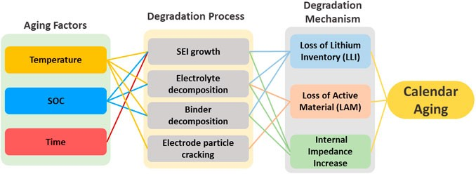
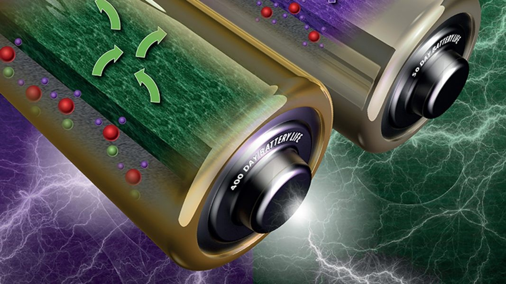
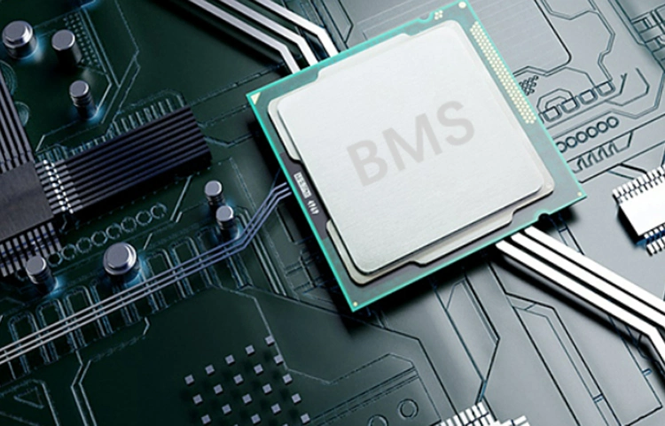

Just like electric vehicles are important for the environment, lithium-ion batteries are crucial for electric vehicles. It powers the vehicle and is central to its performance and longevity. As with all technologies, lithium-ion batteries degrade over time, impacting the vehicle's performance and the driver's experience.
Battery degradation is a natural process that occurs due to various factors, including usage patterns, environmental conditions, and the inherent properties of the battery materials. Understanding how these factors contribute to battery aging is essential for EV owners to maximize their vehicle's lifespan and maintain optimal performance.
Key Changes with Battery Age
A. Charging Voltage
- New Battery: When a lithium-ion battery is new, it operates at its designed voltage range, which typically falls between 3.0V and 4.2V per cell. This voltage range ensures that the battery can store and deliver the maximum amount of energy, contributing to a longer driving range and better overall performance. The charging process is efficient, with the battery reaching full charge relatively quickly.
- Old Battery: As the battery ages, its ability to hold a charge diminishes. The full charge voltage may decrease, or the time required to reach full charge may increase. This is due to the growth of a solid electrolyte interphase (SEI) layer on the anode, which increases internal resistance and reduces the battery's overall efficiency. Consequently, the vehicle's driving range decreases, and charging times become longer.
B. Charging Current
- New Battery: A new lithium-ion battery can accept higher charging currents, allowing for faster charging times. This capability is due to the low internal resistance and efficient ion transport within the battery cells. Fast charging is a convenient feature for EV owners, enabling them to quickly replenish the battery's energy and continue their journeys with minimal downtime.
- Old Battery: As the battery ages, its internal resistance increases, leading to a reduced ability to accept high charging currents. This increase in resistance is primarily due to the degradation of the battery's active materials and the growth of the SEI layer. As a result, the charging process becomes slower, and the battery generates more heat during charging, which can further accelerate degradation if not properly managed.
C. Capacity
- New Battery: The capacity of a new lithium-ion battery is at its maximum, allowing the EV to achieve its designed driving range. This capacity is a measure of the battery's ability to store energy, and it directly correlates with the vehicle's range on a single charge. A new battery provides the best performance in terms of energy storage, power delivery, and overall efficiency.
- Old Battery: Over time, the battery's capacity diminishes due to the repeated charge and discharge cycles. This capacity loss, known as capacity fade, results in a shorter driving range and reduced performance. Several factors contribute to capacity fade, including the loss of active lithium ions, the breakdown of electrode materials, and the growth of the SEI layer. As the battery ages, these processes become more pronounced, leading to a noticeable decline in performance.

Additional Points
Battery aging is influenced by several factors beyond the general changes in voltage, current, and capacity. These factors include the battery's chemistry, usage patterns, and the environment in which the EV operates.
Individual Variations
Different lithium-ion batteries have varying chemistries, such as lithium iron phosphate (LFP), lithium nickel manganese cobalt oxide (NMC), and lithium cobalt oxide (LCO). Each chemistry has distinct characteristics that affect aging and degradation. For example, LFP batteries are known for their long cycle life and thermal stability, while NMC batteries offer higher energy density but may degrade faster under certain conditions.

Usage patterns also play a significant role in battery aging. Frequent fast charging, deep discharges, and high discharge rates can accelerate degradation. Conversely, moderate usage, avoiding extreme states of charge, and minimizing deep discharges can help extend the battery's lifespan.
Environmental Factors
The environment in which an EV operates can significantly impact battery aging. High temperatures can accelerate the degradation of the battery's materials, leading to faster capacity fade and increased internal resistance. Conversely, extremely low temperatures can reduce the battery's ability to deliver power and accept a charge. Maintaining the battery within an optimal temperature range is crucial for longevity.
Importance of Battery Management System (BMS)
The Battery Management System (BMS) is a critical component in managing the health and performance of lithium-ion batteries in EVs. The BMS monitors various parameters, such as voltage, current, temperature, and state of charge, to ensure the battery operates within safe and optimal conditions. By preventing overcharging, deep discharging, and thermal runaway, the BMS helps mitigate the effects of aging and prolong the battery's lifespan.

As lithium-ion batteries age, their performance inevitably declines due to changes in charging voltage, charging current, and capacity. However, understanding these aging effects and implementing strategies to mitigate them can help EV owners maximize their battery's lifespan and maintain optimal performance.
Adjusting Charging Habits
Adjusting charging habits is one of the most effective ways to slow down battery degradation. Avoiding frequent fast charging, minimizing deep discharges, and keeping the battery within an optimal state of charge can significantly extend its lifespan. Keeping the battery between 80 to 100 can also reduce stress on the battery and prevent capacity fade.
Strategies to Slow Down Degradation
To further slow down degradation, EV owners should avoid exposing their vehicles to extreme temperatures. Parking in shaded areas or using thermal management systems can help maintain the battery within an optimal temperature range. Additionally, regular maintenance and monitoring of the battery's health through the BMS can help identify potential issues early and prevent significant capacity loss.
In conclusion, understanding the aging effects on EV lithium-ion batteries and implementing strategies to mitigate these effects are crucial for maximizing the lifespan and performance of the vehicle. By adjusting charging habits, managing environmental conditions, and relying on professional expertise, EV owners can ensure their batteries remain healthy and efficient for as long as possible.